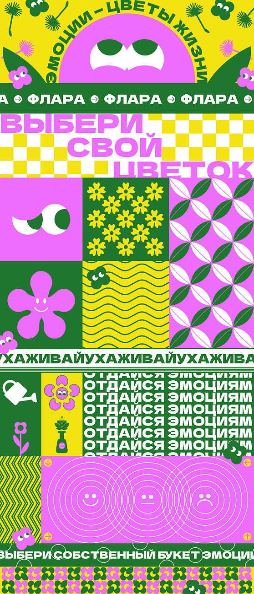

КОЛЛАБОРАЦИЯ
ФЛАРА ×
СДВИЖ*
*
Эта футболка появилась на основе веб-плаката, созданного для проекта ФЛАРА. Мы сохранили его яркий визуальный язык, но перенесли его в контекст скалолазания. Так графика, которая раньше рассказывала об эмоциях через цветы, стала частью маршрута, где каждое движение помогает прожить эти эмоции в реальности.
Основой дизайна стал веб-плакат ФЛАРЫ. Из него были перенесены фирменная цветовая палитра, цветок, графические символы и композиционные элементы. Они сохранили свою эмоциональную выразительность, но получили новое значение в пространстве СДВИЖ*.
Цветок остаётся главным героем композиции. Во ФЛАРЕ он символизирует эмоциональное состояние человека, а на футболке становится ориентиром маршрута, вокруг которого строится вся графика. Он объединяет внутренние переживания и физическое движение в единый визуальный образ.
Маршрутные линии, карабины и топографические контуры дополняют плакатную графику, превращая её в историю о восхождении. Каждый элемент напоминает, что путь наверх состоит из последовательных решений, так же как работа с эмоциями начинается с небольших шагов.
Контраст ярких цветов и спортивной символики подчёркивает главную идею коллаборации. Эмоции не существуют отдельно от действий. Их можно проживать через движение, преодоление и взаимодействие с окружающим пространством.
Футболка становится продолжением веб-плаката. Она переносит его идею из цифровой среды в физический мир. Надевая её, человек становится частью этой истории, где эмоции больше не просто изображены, а сопровождают весь путь восхождения.